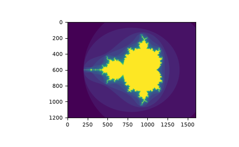
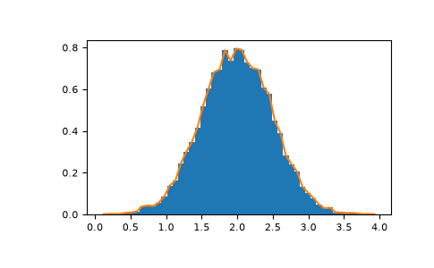

Быстрое знакомство с NumPy#
Предварительные требования #
Потребуется немного знать Python. Освежить знания поможет учебник Python.
Для работы с примерами вам понадобится matplotlib, установленный в дополнение к NumPy.
Профиль учащегося
Это краткий обзор массивов NumPy. Он показывает, как представлены n-мерные (\(n>=2\)) массивы и как с ними работать. Статья будет полезна, если вы не знаете, как применять обычные функции к n-мерным массивам без циклов for, или хотите разобраться в осях и форме таких массивов.
Цели обучения
После прочтения вы сможете:
Понять разницу между одно-, двух- и n-мерными массивами в NumPy;
Понять, как применять некоторые операции линейной алгебры к N-мерным массивам без циклов for;
Понять свойства оси и формы для n-мерных массивов.
Основы#
Основной объект NumPy — однородный многомерный массив: таблица элементов, обычно чисел, одного типа, индексируемая кортежем неотрицательных целых чисел. В NumPy измерения называются осями.
Например, массив для координат точки в 3D-пространстве [1, 2, 1] имеет одну ось. Эта ось имеет 3 элемента, поэтому мы говорим, что она имеет длину 3. В примере, изображенном ниже, массив имеет 2 оси. Первая ось имеет длину 2, вторая ось имеет длину 3.
[[1., 0., 0.],
[0., 1., 2.]]
Класс массива NumPy называется ndarray. Он также известен под псевдонимом array. Обратите внимание, что numpy.array — это не то же самое, что стандартный класс библиотеки Python array.array, который обрабатывает только одномерные массивы и предлагает меньшую функциональность. Наиболее важными атрибутами объекта ndarray являются:
- ndarray.ndim
число осей (измерений) массива.
- ndarray.shape
размеры массива по осям. Это кортеж целых чисел, задающий размер каждого измерения. Для матрицы с n строками и m столбцами
shapeравен(n,m). Таким образом, длина кортежаshapeравна числу осейndim.- ndarray.size
Общее число элементов массива. Оно равно произведению компонентов
shape.- ndarray.dtype
Объект, описывающий тип элементов в массиве. Можно создать или указать dtype с использованием стандартных типов Python. Кроме того, NumPy предоставляет свои собственные типы. numpy.int32, numpy.int16 и numpy.float64 являются некоторыми примерами.
- ndarray.itemsize
Размер каждого элемента массива в байтах. Например, для типа
float64атрибутitemsizeравен 8 (=64/8), а для указанного в оригинале типаcomplex32атрибутitemsizeдолжен был бы равняться 4 (=32/8). Эквивалентная запись —ndarray.dtype.itemsize. Примечание переводчика: complex32 не является поддерживаемым стандартным dtype NumPy 2.5; это ошибка примера. Для float32 размер равен 4 байтам, а для complex64 — 8 байтам.- ndarray.data
буфер, содержащий сами элементы массива. Обычно этот атрибут не нужен: доступ к элементам массива осуществляется через индексацию.
Пример#
>>> import numpy as np
>>> a = np.arange(15).reshape(3, 5)
>>> a
array([[ 0, 1, 2, 3, 4],
[ 5, 6, 7, 8, 9],
[10, 11, 12, 13, 14]])
>>> a.shape
(3, 5)
>>> a.ndim
2
>>> a.dtype.name
'int64'
>>> a.itemsize
8
>>> a.size
15
>>> type(a)
<class 'numpy.ndarray'>
>>> b = np.array([6, 7, 8])
>>> b
array([6, 7, 8])
>>> type(b)
<class 'numpy.ndarray'>
Создание массивов#
Существует несколько способов создания массивов.
Например, вы можете создать массив из обычного списка или кортежа Python, используя функцию array. Тип результирующего массива выводится из типа элементов последовательности.
>>> import numpy as np
>>> a = np.array([2, 3, 4])
>>> a
array([2, 3, 4])
>>> a.dtype
dtype('int64')
>>> b = np.array([1.2, 3.5, 5.1])
>>> b.dtype
dtype('float64')
Частая ошибка заключается в вызове array с несколькими аргументами вместо предоставления одной последовательности в качестве аргумента.
>>> a = np.array(1, 2, 3, 4) # WRONG
Traceback (most recent call last):
...
TypeError: array() takes from 1 to 2 positional arguments but 4 were given
>>> a = np.array([1, 2, 3, 4]) # RIGHT
Комментарии к примеру на русском
- НЕПРАВИЛЬНО
- ПРАВИЛЬНО
array преобразует последовательности последовательностей в двумерные массивы, последовательности последовательностей последовательностей — в трёхмерные и так далее.
>>> b = np.array([(1.5, 2, 3), (4, 5, 6)])
>>> b
array([[1.5, 2. , 3. ],
[4. , 5. , 6. ]])
Тип массива также может быть явно указан во время создания:
>>> c = np.array([[1, 2], [3, 4]], dtype=np.complex128)
>>> c
array([[1.+0.j, 2.+0.j],
[3.+0.j, 4.+0.j]])
Часто значения элементов массива ещё неизвестны, но его размер уже известен. Для таких случаев NumPy предоставляет функции создания массивов с временным начальным содержимым. Это уменьшает необходимость увеличивать массивы впоследствии — такую операцию выполнять дорого.
Функция zeros создаёт массив нулей, ones — массив единиц, а empty — массив с произвольным начальным содержимым, зависящим от состояния памяти. По умолчанию dtype создаваемого массива — float64, но его можно задать именованным аргументом dtype.
>>> np.zeros((3, 4))
array([[0., 0., 0., 0.],
[0., 0., 0., 0.],
[0., 0., 0., 0.]])
>>> np.ones((2, 3, 4), dtype=np.int16)
array([[[1, 1, 1, 1],
[1, 1, 1, 1],
[1, 1, 1, 1]],
[[1, 1, 1, 1],
[1, 1, 1, 1],
[1, 1, 1, 1]]], dtype=int16)
>>> np.empty((2, 3))
array([[3.73603959e-262, 6.02658058e-154, 6.55490914e-260], # may vary
[5.30498948e-313, 3.14673309e-307, 1.00000000e+000]])
Комментарии к примеру на русском
- Результат может отличаться
Для создания последовательностей чисел NumPy обеспечивает функцию arange, аналогичную встроенной Python range, но возвращает массив.
>>> np.arange(10, 30, 5)
array([10, 15, 20, 25])
>>> np.arange(0, 2, 0.3) # it accepts float arguments
array([0. , 0.3, 0.6, 0.9, 1.2, 1.5, 1.8])
Комментарии к примеру на русском
- Принимает аргументы с плавающей точкой
При использовании arange с аргументами с плавающей запятой обычно невозможно предсказать число полученных элементов из-за конечной точности их представления. Поэтому, как правило, лучше использовать функцию linspace, которой вместо шага передаётся нужное число элементов:
>>> from numpy import pi
>>> np.linspace(0, 2, 9) # 9 numbers from 0 to 2
array([0. , 0.25, 0.5 , 0.75, 1. , 1.25, 1.5 , 1.75, 2. ])
>>> x = np.linspace(0, 2 * pi, 100) # useful to evaluate function at lots of points
>>> f = np.sin(x)
Комментарии к примеру на русском
- 9 чисел от 0 до 2
- Удобно для вычисления функции во множестве точек
См. также
array,
zeros,
zeros_like,
ones,
ones_like,
empty,
empty_like,
arange,
linspace,
random.Generator.random,
random.Generator.normal,
fromfunction,
fromfile
Вывод массивов#
Когда вы печатаете массив, NumPy отображает его аналогично вложенным спискам, но со следующей разметкой:
последняя ось выводится слева направо,
предпоследняя ось выводится сверху вниз,
остальные также выводятся сверху вниз; соседние срезы разделяются пустой строкой.
Одномерные массивы затем печатаются в виде строк, двумерные — в виде матриц, а трехмерные — в виде списков матриц.
>>> a = np.arange(6) # 1d array
>>> print(a)
[0 1 2 3 4 5]
>>>
>>> b = np.arange(12).reshape(4, 3) # 2d array
>>> print(b)
[[ 0 1 2]
[ 3 4 5]
[ 6 7 8]
[ 9 10 11]]
>>>
>>> c = np.arange(24).reshape(2, 3, 4) # 3d array
>>> print(c)
[[[ 0 1 2 3]
[ 4 5 6 7]
[ 8 9 10 11]]
[[12 13 14 15]
[16 17 18 19]
[20 21 22 23]]]
Комментарии к примеру на русском
- Одномерный массив
- Двумерный массив
- Трёхмерный массив
Подробнее о преобразовании формы см. ниже, в описании reshape.
Если массив слишком велик для печати, NumPy автоматически пропускает центральную часть массива и печатает только углы:
>>> print(np.arange(10000))
[ 0 1 2 ... 9997 9998 9999]
>>>
>>> print(np.arange(10000).reshape(100, 100))
[[ 0 1 2 ... 97 98 99]
[ 100 101 102 ... 197 198 199]
[ 200 201 202 ... 297 298 299]
...
[9700 9701 9702 ... 9797 9798 9799]
[9800 9801 9802 ... 9897 9898 9899]
[9900 9901 9902 ... 9997 9998 9999]]
Чтобы отключить сокращённый вывод и вывести массив целиком, измените параметры печати с помощью set_printoptions.
>>> np.set_printoptions(threshold=sys.maxsize) # sys module should be imported
Комментарии к примеру на русском
- Модуль sys должен быть импортирован
Базовые операции #
Арифметические операторы действуют на массивы поэлементно. Создаётся новый массив, который заполняется результатом.
>>> a = np.array([20, 30, 40, 50])
>>> b = np.arange(4)
>>> b
array([0, 1, 2, 3])
>>> c = a - b
>>> c
array([20, 29, 38, 47])
>>> b**2
array([0, 1, 4, 9])
>>> 10 * np.sin(a)
array([ 9.12945251, -9.88031624, 7.4511316 , -2.62374854])
>>> a < 35
array([ True, True, False, False])
В отличие от многих матричных языков, оператор умножения * для массивов NumPy действует поэлементно. Матричное произведение вычисляется оператором @ (в Python >= 3.5) либо функцией или методом dot:
>>> A = np.array([[1, 1],
... [0, 1]])
>>> B = np.array([[2, 0],
... [3, 4]])
>>> A * B # elementwise product
array([[2, 0],
[0, 4]])
>>> A @ B # matrix product
array([[5, 4],
[3, 4]])
>>> A.dot(B) # another matrix product
array([[5, 4],
[3, 4]])
Комментарии к примеру на русском
- Поэлементное произведение
- Матричное произведение
- Ещё одно матричное произведение
Некоторые операции, например += и *=, изменяют существующий массив на месте, а не создают новый.
>>> rg = np.random.default_rng(1) # create instance of default random number generator
>>> a = np.ones((2, 3), dtype=np.int_)
>>> b = rg.random((2, 3))
>>> a *= 3
>>> a
array([[3, 3, 3],
[3, 3, 3]])
>>> b += a
>>> b
array([[3.51182162, 3.9504637 , 3.14415961],
[3.94864945, 3.31183145, 3.42332645]])
>>> a += b # b is not automatically converted to integer type
Traceback (most recent call last):
...
numpy._core._exceptions._UFuncOutputCastingError: Cannot cast ufunc 'add' output from dtype('float64') to dtype('int64') with casting rule 'same_kind'
Комментарии к примеру на русском
- Создаём экземпляр генератора случайных чисел по умолчанию
- b не преобразуется автоматически к целочисленному типу
При операциях над массивами разных типов результат получает более общий или более точный тип. Такое преобразование называют повышением типа (upcasting).
>>> a = np.ones(3, dtype=np.int32)
>>> b = np.linspace(0, pi, 3)
>>> b.dtype.name
'float64'
>>> c = a + b
>>> c
array([1. , 2.57079633, 4.14159265])
>>> c.dtype.name
'float64'
>>> d = np.exp(c * 1j)
>>> d
array([ 0.54030231+0.84147098j, -0.84147098+0.54030231j,
-0.54030231-0.84147098j])
>>> d.dtype.name
'complex128'
Многие унарные операции, такие как вычисление суммы всех элементов в массиве, реализованы как методы класса ndarray.
>>> a = rg.random((2, 3))
>>> a
array([[0.82770259, 0.40919914, 0.54959369],
[0.02755911, 0.75351311, 0.53814331]])
>>> a.sum()
3.1057109529998157
>>> a.min()
0.027559113243068367
>>> a.max()
0.8277025938204418
По умолчанию эти операции применяются к массиву как к списку чисел независимо от его формы. Однако параметр axis позволяет выполнить операцию вдоль указанной оси массива:
>>> b = np.arange(12).reshape(3, 4)
>>> b
array([[ 0, 1, 2, 3],
[ 4, 5, 6, 7],
[ 8, 9, 10, 11]])
>>>
>>> b.sum(axis=0) # sum of each column
array([12, 15, 18, 21])
>>>
>>> b.min(axis=1) # min of each row
array([0, 4, 8])
>>>
>>> b.cumsum(axis=1) # cumulative sum along each row
array([[ 0, 1, 3, 6],
[ 4, 9, 15, 22],
[ 8, 17, 27, 38]])
Комментарии к примеру на русском
- Сумма каждого столбца
- Минимум каждой строки
- Накопленная сумма вдоль каждой строки
Универсальные функции #
NumPy предоставляет знакомые математические функции, такие как sin, cos и exp. В NumPy они называются «универсальными функциями» (ufunc).В NumPy эти функции работают по элементам на массиве, производя массив в качестве вывода.
>>> B = np.arange(3)
>>> B
array([0, 1, 2])
>>> np.exp(B)
array([1. , 2.71828183, 7.3890561 ])
>>> np.sqrt(B)
array([0. , 1. , 1.41421356])
>>> C = np.array([2., -1., 4.])
>>> np.add(B, C)
array([2., 0., 6.])
См. также
all,
any,
apply_along_axis,
argmax,
argmin,
argsort,
average,
bincount,
ceil,
clip,
conj,
corrcoef,
cov,
cross,
cumprod,
cumsum,
diff,
dot,
floor,
inner,
invert,
lexsort,
max,
maximum,
mean,
median,
min,
minimum,
nonzero,
outer,
prod,
re,
round,
sort,
std,
sum,
trace,
transpose,
var,
vdot,
vectorize,
where
Индексация, срезы и обход#
Одномерные массивы, подобно спискам и другим последовательностям Python, поддерживают индексацию, срезы и перебор элементов.
>>> a = np.arange(10)**3
>>> a
array([ 0, 1, 8, 27, 64, 125, 216, 343, 512, 729])
>>> a[2]
8
>>> a[2:5]
array([ 8, 27, 64])
>>> # equivalent to a[0:6:2] = 1000;
>>> # from start to position 6, exclusive, set every 2nd element to 1000
>>> a[:6:2] = 1000
>>> a
array([1000, 1, 1000, 27, 1000, 125, 216, 343, 512, 729])
>>> a[::-1] # reversed a
array([ 729, 512, 343, 216, 125, 1000, 27, 1000, 1, 1000])
>>> for i in a:
... print(i**(1 / 3.))
...
9.999999999999998 # may vary
1.0
9.999999999999998
3.0
9.999999999999998
4.999999999999999
5.999999999999999
6.999999999999999
7.999999999999999
8.999999999999998
Комментарии к примеру на русском
- Эквивалентно a[0:6:2] = 1000;
- От начала до позиции 6 не включительно присваиваем каждому второму элементу 1000
- Массив a в обратном порядке
- Результат может отличаться
У многомерных массивов можно задать по одному индексу на ось. Индексы задаются кортежем и разделяются запятыми:
>>> def f(x, y):
... return 10 * x + y
...
>>> b = np.fromfunction(f, (5, 4), dtype=np.int_)
>>> b
array([[ 0, 1, 2, 3],
[10, 11, 12, 13],
[20, 21, 22, 23],
[30, 31, 32, 33],
[40, 41, 42, 43]])
>>> b[2, 3]
23
>>> b[0:5, 1] # each row in the second column of b
array([ 1, 11, 21, 31, 41])
>>> b[:, 1] # equivalent to the previous example
array([ 1, 11, 21, 31, 41])
>>> b[1:3, :] # each column in the second and third row of b
array([[10, 11, 12, 13],
[20, 21, 22, 23]])
Комментарии к примеру на русском
- Все строки второго столбца b
- Эквивалентно предыдущему примеру
- Все столбцы второй и третьей строк b
Если индексов меньше, чем осей, недостающие индексы считаются полными срезами :
>>> b[-1] # the last row. Equivalent to b[-1, :]
array([40, 41, 42, 43])
Комментарии к примеру на русском
- Последняя строка; эквивалентно b[-1, :]
Выражение в скобках в b[i] рассматривается как i, за которым следует столько экземпляров :, сколько необходимо для представления оставшихся осей. NumPy также позволяет записывать это с использованием точек, как b[i, ...].
Многоточие (...) заменяет столько двоеточий, сколько нужно для полного кортежа индексации. Например, если у массива x пять осей, то
x[1, 2, ...]эквивалентенx[1, 2, :, :, :],x[..., 3]дляx[:, :, :, :, 3]иx[4, ..., 5, :]эквивалентноx[4, :, :, 5, :].
>>> c = np.array([[[ 0, 1, 2], # a 3D array (two stacked 2D arrays)
... [ 10, 12, 13]],
... [[100, 101, 102],
... [110, 112, 113]]])
>>> c.shape
(2, 2, 3)
>>> c[1, ...] # same as c[1, :, :] or c[1]
array([[100, 101, 102],
[110, 112, 113]])
>>> c[..., 2] # same as c[:, :, 2]
array([[ 2, 13],
[102, 113]])
Комментарии к примеру на русском
- Трёхмерный массив: два двумерных массива друг над другом
- То же, что c[1, :, :] или c[1]
- То же, что c[:, :, 2]
Обход многомерных массивов выполняется по первой оси:
>>> for row in b:
... print(row)
...
[0 1 2 3]
[10 11 12 13]
[20 21 22 23]
[30 31 32 33]
[40 41 42 43]
Однако для выполнения операции над каждым элементом массива можно использовать атрибут flat, представляющий собой итератор по всем элементам массива:
>>> for element in b.flat:
... print(element)
...
0
1
2
3
10
11
12
13
20
21
22
23
30
31
32
33
40
41
42
43
См. также
Индексирование ndarray, Функции индексирования (справочник), newaxis, ndenumerate, indices
Манипуляции с формой #
Изменение формы массива#
Массив имеет форму, заданную количеством элементов вдоль каждой оси:
>>> a = np.floor(10 * rg.random((3, 4)))
>>> a
array([[3., 7., 3., 4.],
[1., 4., 2., 2.],
[7., 2., 4., 9.]])
>>> a.shape
(3, 4)
Форму массива можно изменить с помощью различных команд. Обратите внимание, что следующие три команды возвращают измененный массив, но не меняют исходный массив:
>>> a.ravel() # returns the array, flattened
array([3., 7., 3., 4., 1., 4., 2., 2., 7., 2., 4., 9.])
>>> a.reshape(6, 2) # returns the array with a modified shape
array([[3., 7.],
[3., 4.],
[1., 4.],
[2., 2.],
[7., 2.],
[4., 9.]])
>>> a.T # returns the array, transposed
array([[3., 1., 7.],
[7., 4., 2.],
[3., 2., 4.],
[4., 2., 9.]])
>>> a.T.shape
(4, 3)
>>> a.shape
(3, 4)
Комментарии к примеру на русском
- Возвращает массив, развёрнутый в одномерный
- Возвращает массив с изменённой формой
- Возвращает транспонированный массив
После ravel элементы обычно следуют в порядке C: быстрее всего меняется крайний правый индекс, поэтому за a[0, 0] идёт a[0, 1]. При преобразовании формы порядок C также используется по умолчанию. NumPy обычно создаёт массивы с таким расположением в памяти, поэтому ravel чаще всего не требует копирования аргумента. Но массив, полученный срезами другого массива или созданный с нестандартными параметрами, иногда приходится копировать. Необязательный аргумент функций ravel и reshape позволяет выбрать порядок Fortran, при котором быстрее всего меняется крайний левый индекс.
Функция reshape возвращает массив с изменённой формой, а метод ndarray.resize изменяет сам исходный массив:
>>> a
array([[3., 7., 3., 4.],
[1., 4., 2., 2.],
[7., 2., 4., 9.]])
>>> a.resize((2, 6))
>>> a
array([[3., 7., 3., 4., 1., 4.],
[2., 2., 7., 2., 4., 9.]])
Если при изменении формы одно измерение задано как -1, его размер вычисляется автоматически по остальным размерам и общему числу элементов. Примечание переводчика: оригинал ошибочно говорит об автоматическом вычислении остальных измерений; вычисляется именно размер, обозначенный −1.
>>> a.reshape(3, -1)
array([[3., 7., 3., 4.],
[1., 4., 2., 2.],
[7., 2., 4., 9.]])
См. также
Объединение разных массивов#
Несколько массивов можно объединить вдоль разных осей:
>>> a = np.floor(10 * rg.random((2, 2)))
>>> a
array([[9., 7.],
[5., 2.]])
>>> b = np.floor(10 * rg.random((2, 2)))
>>> b
array([[1., 9.],
[5., 1.]])
>>> np.vstack((a, b))
array([[9., 7.],
[5., 2.],
[1., 9.],
[5., 1.]])
>>> np.hstack((a, b))
array([[9., 7., 1., 9.],
[5., 2., 5., 1.]])
Функция column_stack объединяет одномерные массивы в столбцы двумерного массива. Она эквивалентна hstack только для двумерных массивов:
>>> from numpy import newaxis
>>> np.column_stack((a, b)) # with 2D arrays
array([[9., 7., 1., 9.],
[5., 2., 5., 1.]])
>>> a = np.array([4., 2.])
>>> b = np.array([3., 8.])
>>> np.column_stack((a, b)) # returns a 2D array
array([[4., 3.],
[2., 8.]])
>>> np.hstack((a, b)) # the result is different
array([4., 2., 3., 8.])
>>> a[:, newaxis] # view `a` as a 2D column vector
array([[4.],
[2.]])
>>> np.column_stack((a[:, newaxis], b[:, newaxis]))
array([[4., 3.],
[2., 8.]])
>>> np.hstack((a[:, newaxis], b[:, newaxis])) # the result is the same
array([[4., 3.],
[2., 8.]])
Комментарии к примеру на русском
- Для двумерных массивов
- Возвращает двумерный массив
- Результат отличается
- Представляем `a` как двумерный вектор-столбец
- Результат совпадает
В общем случае для массивов с числом измерений больше двух hstack объединяет массивы вдоль второй оси, vstack — вдоль первой, а concatenate принимает необязательный аргумент с номером оси объединения.
Замечание
В сложных случаях r_ и c_ полезны для создания массивов путем укладки чисел по одной оси. Они позволяют использовать буквальные обозначения диапазона :.
>>> np.r_[1:4, 0, 4]
array([1, 2, 3, 0, 4])
При работе с массивами r_ и c_ позволяют объединять их примерно так же, как vstack и hstack, а также задавать ось объединения. Примечание переводчика: сходство не означает полной эквивалентности, особенно для одномерных входов. Это объекты с синтаксисом индексации, а не обычные функции; дополнительные параметры у них задаются строковой директивой внутри квадратных скобок.
См. также
hstack,
vstack,
column_stack,
concatenate,
c_,
r_
Разбиение массива на несколько меньших#
С помощью hsplit можно разбить массив по горизонтали, задав либо число возвращаемых массивов одинаковой формы, либо столбцы, после которых следует выполнить разбиение:
>>> a = np.floor(10 * rg.random((2, 12)))
>>> a
array([[6., 7., 6., 9., 0., 5., 4., 0., 6., 8., 5., 2.],
[8., 5., 5., 7., 1., 8., 6., 7., 1., 8., 1., 0.]])
>>> # Split `a` into 3
>>> np.hsplit(a, 3)
[array([[6., 7., 6., 9.],
[8., 5., 5., 7.]]), array([[0., 5., 4., 0.],
[1., 8., 6., 7.]]), array([[6., 8., 5., 2.],
[1., 8., 1., 0.]])]
>>> # Split `a` after the third and the fourth column
>>> np.hsplit(a, (3, 4))
[array([[6., 7., 6.],
[8., 5., 5.]]), array([[9.],
[7.]]), array([[0., 5., 4., 0., 6., 8., 5., 2.],
[1., 8., 6., 7., 1., 8., 1., 0.]])]
Комментарии к примеру на русском
- Разбиваем `a` на три части
- Разбиваем `a` после третьего и четвёртого столбцов
Функция vsplit разбивает массив по вертикали, а array_split позволяет явно выбрать ось разбиения.
Копии и представления#
При операциях с массивами данные иногда копируются в новый массив, а иногда используются совместно. Начинающих это часто сбивает с толку. Рассмотрим три случая:
Полное отсутствие копирования#
Обычное присваивание не копирует ни объекты, ни их данные.
>>> a = np.array([[ 0, 1, 2, 3],
... [ 4, 5, 6, 7],
... [ 8, 9, 10, 11]])
>>> b = a # no new object is created
>>> b is a # a and b are two names for the same ndarray object
True
Комментарии к примеру на русском
- Новый объект не создаётся
- a и b — два имени одного объекта ndarray
Python передает изменяемые объекты как ссылки, поэтому вызовы функций не создают копии.
>>> def f(x):
... print(id(x))
...
>>> id(a) # id is a unique identifier of an object
148293216 # may vary
>>> f(a)
148293216 # may vary
Комментарии к примеру на русском
- id — уникальный идентификатор объекта
- Результат может отличаться
Представление или поверхностная копия#
Разные объекты массивов могут использовать общие данные. Метод view создаёт новый объект массива, обращающийся к тем же данным.
>>> c = a.view()
>>> c is a
False
>>> c.base is a # c is a view of the data owned by a
True
>>> c.flags.owndata
False
>>>
>>> c = c.reshape((2, 6)) # a's shape doesn't change, reassigned c is still a view of a
>>> a.shape
(3, 4)
>>> c[0, 4] = 1234 # a's data changes
>>> a
array([[ 0, 1, 2, 3],
[1234, 5, 6, 7],
[ 8, 9, 10, 11]])
Комментарии к примеру на русском
- c — представление данных, принадлежащих a
- Форма a не меняется; после присваивания c остаётся представлением a
- Данные a меняются
Срез массива возвращает его представление:
>>> s = a[:, 1:3]
>>> s[:] = 10 # s[:] is a view of s. Note the difference between s = 10 and s[:] = 10
>>> a
array([[ 0, 10, 10, 3],
[1234, 10, 10, 7],
[ 8, 10, 10, 11]])
Комментарии к примеру на русском
- s[:] — представление s. Сравните s = 10 и s[:] = 10
Глубокая копия #
Метод copy создает полную копию массива и его данных.
>>> d = a.copy() # a new array object with new data is created
>>> d is a
False
>>> d.base is a # d doesn't share anything with a
False
>>> d[0, 0] = 9999
>>> a
array([[ 0, 10, 10, 3],
[1234, 10, 10, 7],
[ 8, 10, 10, 11]])
Комментарии к примеру на русском
- Создаётся новый объект массива с новыми данными
- У d нет общих данных с a
Иногда после среза следует вызвать copy, если исходный массив больше не нужен. Например, если a — огромный промежуточный результат, а итоговый массив b содержит лишь малую часть a, при создании b с помощью среза следует сделать независимую копию данных:
>>> a = np.arange(int(1e8))
>>> b = a[:100].copy()
>>> del a # the memory of ``a`` can be released.
Комментарии к примеру на русском
- Память ``a`` можно освободить.
Если вместо этого использовать b = a[:100], массив a останется в памяти, поскольку на него ссылается b, даже после выполнения del a.
См. также «Копии и представления».
Обзор функций и методов#
Ниже приведены имена некоторых полезных функций и методов NumPy, сгруппированные по категориям. Полный список см. в разделе Функции и объекты по темам.
- Создание массивов
arange,array,copy,empty,empty_like,eye,fromfile,fromfunction,identity,linspace,logspace,mgrid,ogrid,ones,ones_like,r_,zeros,zeros_like- Преобразования
ndarray.astype,atleast_1d,atleast_2d,atleast_3d, mat- Операции
array_split,column_stack,concatenate,diagonal,dsplit,dstack,hsplit,hstack,ndarray.item,newaxis,ravel,repeat,reshape,resize,squeeze,swapaxes,take,transpose,vsplit,vstack- Вопросы
- Порядок
- Операции
choose,compress,cumprod,cumsum,inner,ndarray.fill,imag,prod,put,putmask,real,sum- Базовая статистика
- Базовая линейная алгебра
cross,dot,outer,linalg.svd,vdot
За пределами основ#
Правила трансляции массивов #
Трансляция позволяет универсальным функциям согласованно обрабатывать входные массивы, формы которых не совпадают в точности.
Первое правило трансляции массивов: если входные массивы имеют разное число измерений, в начало форм массивов с меньшим числом измерений добавляются единицы, пока число измерений у всех массивов не станет одинаковым.
Согласно второму правилу трансляции массивов, если размер массива вдоль некоторого измерения равен 1, он ведёт себя так, словно его размер вдоль этого измерения равен наибольшему соответствующему размеру среди массивов. При трансляции значение элемента считается одинаковым вдоль всего этого измерения.
После применения правил трансляции массивов размеры всех массивов должны совпадать. Подробнее см. в разделе Трансляция массивов (согласование форм).
Расширенная индексация и приёмы работы с индексами#
Индексация в NumPy предоставляет больше возможностей, чем у обычных последовательностей Python. Помимо целых индексов и срезов, рассмотренных выше, можно использовать массивы целых индексов и булевы массивы.
Индексация массивами индексов#
>>> a = np.arange(12)**2 # the first 12 square numbers
>>> i = np.array([1, 1, 3, 8, 5]) # an array of indices
>>> a[i] # the elements of `a` at the positions `i`
array([ 1, 1, 9, 64, 25])
>>>
>>> j = np.array([[3, 4], [9, 7]]) # a bidimensional array of indices
>>> a[j] # the same shape as `j`
array([[ 9, 16],
[81, 49]])
Комментарии к примеру на русском
- Первые 12 квадратов целых чисел
- Массив индексов
- Элементы `a` в позициях `i`
- Двумерный массив индексов
- Та же форма, что у `j`
Если индексируемый массив a многомерный, один массив индексов относится к первому измерению a. Следующий пример показывает это поведение, преобразуя изображение меток в цветное изображение с помощью палитры.
>>> palette = np.array([[0, 0, 0], # black
... [255, 0, 0], # red
... [0, 255, 0], # green
... [0, 0, 255], # blue
... [255, 255, 255]]) # white
>>> image = np.array([[0, 1, 2, 0], # each value corresponds to a color in the palette
... [0, 3, 4, 0]])
>>> palette[image] # the (2, 4, 3) color image
array([[[ 0, 0, 0],
[255, 0, 0],
[ 0, 255, 0],
[ 0, 0, 0]],
[[ 0, 0, 0],
[ 0, 0, 255],
[255, 255, 255],
[ 0, 0, 0]]])
Комментарии к примеру на русском
- Чёрный
- Красный
- Зелёный
- Синий
- Белый
- Каждое значение соответствует цвету палитры
- Цветное изображение формы (2, 4, 3)
Мы также можем давать индексы для более чем одного измерения. Массивы индексов для каждого измерения должны иметь одинаковую форму.
>>> a = np.arange(12).reshape(3, 4)
>>> a
array([[ 0, 1, 2, 3],
[ 4, 5, 6, 7],
[ 8, 9, 10, 11]])
>>> i = np.array([[0, 1], # indices for the first dim of `a`
... [1, 2]])
>>> j = np.array([[2, 1], # indices for the second dim
... [3, 3]])
>>>
>>> a[i, j] # i and j must have equal shape
array([[ 2, 5],
[ 7, 11]])
>>>
>>> a[i, 2]
array([[ 2, 6],
[ 6, 10]])
>>>
>>> a[:, j]
array([[[ 2, 1],
[ 3, 3]],
[[ 6, 5],
[ 7, 7]],
[[10, 9],
[11, 11]]])
Комментарии к примеру на русском
- Индексы первого измерения `a`
- Индексы второго измерения
- i и j должны иметь одинаковую форму
В Python arr[i, j] точно такой же, как и arr[(i, j)], поэтому мы можем поместить i и j в tuple, а затем сделать индексацию с этим.
>>> l = (i, j)
>>> # equivalent to a[i, j]
>>> a[l]
array([[ 2, 5],
[ 7, 11]])
Комментарии к примеру на русском
- Эквивалентно a[i, j]
Однако мы не можем сделать это, поместив i и j в массив, потому что этот массив будет интерпретироваться как индексирование первого измерения a.
>>> s = np.array([i, j])
>>> # not what we want
>>> a[s]
Traceback (most recent call last):
File "<stdin>", line 1, in <module>
IndexError: index 3 is out of bounds for axis 0 with size 3
>>> # same as `a[i, j]`
>>> a[tuple(s)]
array([[ 2, 5],
[ 7, 11]])
Комментарии к примеру на русском
- Не тот результат, который нам нужен
- То же, что `a[i, j]`
Ещё одно распространённое применение индексации массивами — поиск максимального значения в рядах, зависящих от времени:
>>> time = np.linspace(20, 145, 5) # time scale
>>> data = np.sin(np.arange(20)).reshape(5, 4) # 4 time-dependent series
>>> time
array([ 20. , 51.25, 82.5 , 113.75, 145. ])
>>> data
array([[ 0. , 0.84147098, 0.90929743, 0.14112001],
[-0.7568025 , -0.95892427, -0.2794155 , 0.6569866 ],
[ 0.98935825, 0.41211849, -0.54402111, -0.99999021],
[-0.53657292, 0.42016704, 0.99060736, 0.65028784],
[-0.28790332, -0.96139749, -0.75098725, 0.14987721]])
>>> # index of the maxima for each series
>>> ind = data.argmax(axis=0)
>>> ind
array([2, 0, 3, 1])
>>> # times corresponding to the maxima
>>> time_max = time[ind]
>>>
>>> data_max = data[ind, range(data.shape[1])] # => data[ind[0], 0], data[ind[1], 1]...
>>> time_max
array([ 82.5 , 20. , 113.75, 51.25])
>>> data_max
array([0.98935825, 0.84147098, 0.99060736, 0.6569866 ])
>>> np.all(data_max == data.max(axis=0))
True
Комментарии к примеру на русском
- Шкала времени
- Четыре временных ряда
- Индекс максимума каждого ряда
- Моменты времени, соответствующие максимумам
- => data[ind[0], 0], data[ind[1], 1]...
Индексацию массивами можно использовать и для присваивания:
>>> a = np.arange(5)
>>> a
array([0, 1, 2, 3, 4])
>>> a[[1, 3, 4]] = 0
>>> a
array([0, 0, 2, 0, 0])
Однако, когда список индексов содержит повторения, присвоение выполняется несколько раз, оставляя после себя последнее значение:
>>> a = np.arange(5)
>>> a[[0, 0, 2]] = [1, 2, 3]
>>> a
array([2, 1, 3, 3, 4])
Это вполне разумно, но будьте осторожны с конструкцией Python +=: она может работать не так, как вы ожидаете:
>>> a = np.arange(5)
>>> a[[0, 0, 2]] += 1
>>> a
array([1, 1, 3, 3, 4])
Несмотря на то, что 0 встречается дважды в списке индексов, 0-й элемент увеличивается только один раз. Это потому, что Python требует, чтобы a += 1 был эквивалентен a = a + 1.
Индексация булевыми массивами#
При индексации массивами целых чисел мы задаём список индексов нужных элементов. При булевой индексации подход иной: мы явно отмечаем, какие элементы массива нужно выбрать, а какие — нет.
Самый наглядный вариант булевой индексации — использовать булев массив той же формы, что и исходный:
>>> a = np.arange(12).reshape(3, 4)
>>> b = a > 4
>>> b # `b` is a boolean with `a`'s shape
array([[False, False, False, False],
[False, True, True, True],
[ True, True, True, True]])
>>> a[b] # 1d array with the selected elements
array([ 5, 6, 7, 8, 9, 10, 11])
Комментарии к примеру на русском
- `b` — логический массив той же формы, что и `a`
- Одномерный массив выбранных элементов
Это свойство особенно полезно при присваивании:
>>> a[b] = 0 # All elements of `a` higher than 4 become 0
>>> a
array([[0, 1, 2, 3],
[4, 0, 0, 0],
[0, 0, 0, 0]])
Комментарии к примеру на русском
- Все элементы `a`, превышающие 4, становятся нулями
Следующий пример показывает, как с помощью логической индексации построить изображение множества Мандельброта:
>>> import numpy as np
>>> import matplotlib.pyplot as plt
>>> def mandelbrot(h, w, maxit=20, r=2):
... """Returns an image of the Mandelbrot fractal of size (h,w)."""
... x = np.linspace(-2.5, 1.5, 4*h+1)
... y = np.linspace(-1.5, 1.5, 3*w+1)
... A, B = np.meshgrid(x, y)
... C = A + B*1j
... z = np.zeros_like(C)
... divtime = maxit + np.zeros(z.shape, dtype=np.int_)
...
... for i in range(maxit):
... z = z**2 + C
... diverge = abs(z) > r # who is diverging
... div_now = diverge & (divtime == maxit) # who is diverging now
... divtime[div_now] = i # note when
... z[diverge] = r # avoid diverging too much
...
... return divtime
>>> plt.clf()
>>> plt.imshow(mandelbrot(400, 400))
Комментарии к примеру на русском
- Какие элементы расходятся
- Какие элементы расходятся сейчас
- Запоминаем момент
- Не даём значениям расходиться слишком сильно

Второй способ логической индексации больше похож на целочисленную: для каждого измерения задаётся одномерный логический массив, выбирающий нужные срезы:
>>> a = np.arange(12).reshape(3, 4)
>>> b1 = np.array([False, True, True]) # first dim selection
>>> b2 = np.array([True, False, True, False]) # second dim selection
>>>
>>> a[b1, :] # selecting rows
array([[ 4, 5, 6, 7],
[ 8, 9, 10, 11]])
>>>
>>> a[b1] # same thing
array([[ 4, 5, 6, 7],
[ 8, 9, 10, 11]])
>>>
>>> a[:, b2] # selecting columns
array([[ 0, 2],
[ 4, 6],
[ 8, 10]])
>>>
>>> a[b1, b2] # a weird thing to do
array([ 4, 10])
Комментарии к примеру на русском
- Выбор по первому измерению
- Выбор по второму измерению
- Выбираем строки
- То же самое
- Выбираем столбцы
- Необычный способ выбора
Длина одномерного логического массива должна совпадать с размером измерения (оси), по которому вы хотите выбирать элементы. В предыдущем примере длина b1 равна 3 (числу строк в a), а b2 длины 4 подходит для индексации второй оси (столбцов) a.
Функция ix_()#
Функция ix_ позволяет комбинировать разные векторы, получая результат для каждого набора из n элементов. Например, чтобы вычислить a+b*c для всех троек, составленных по одному элементу из векторов a, b и c:
>>> a = np.array([2, 3, 4, 5])
>>> b = np.array([8, 5, 4])
>>> c = np.array([5, 4, 6, 8, 3])
>>> ax, bx, cx = np.ix_(a, b, c)
>>> ax
array([[[2]],
[[3]],
[[4]],
[[5]]])
>>> bx
array([[[8],
[5],
[4]]])
>>> cx
array([[[5, 4, 6, 8, 3]]])
>>> ax.shape, bx.shape, cx.shape
((4, 1, 1), (1, 3, 1), (1, 1, 5))
>>> result = ax + bx * cx
>>> result
array([[[42, 34, 50, 66, 26],
[27, 22, 32, 42, 17],
[22, 18, 26, 34, 14]],
[[43, 35, 51, 67, 27],
[28, 23, 33, 43, 18],
[23, 19, 27, 35, 15]],
[[44, 36, 52, 68, 28],
[29, 24, 34, 44, 19],
[24, 20, 28, 36, 16]],
[[45, 37, 53, 69, 29],
[30, 25, 35, 45, 20],
[25, 21, 29, 37, 17]]])
>>> result[3, 2, 4]
17
>>> a[3] + b[2] * c[4]
17
Свёртку можно реализовать и так:
>>> def ufunc_reduce(ufct, *vectors):
... vs = np.ix_(*vectors)
... r = ufct.identity
... for v in vs:
... r = ufct(r, v)
... return r
Затем используйте его как:
>>> ufunc_reduce(np.add, a, b, c)
array([[[15, 14, 16, 18, 13],
[12, 11, 13, 15, 10],
[11, 10, 12, 14, 9]],
[[16, 15, 17, 19, 14],
[13, 12, 14, 16, 11],
[12, 11, 13, 15, 10]],
[[17, 16, 18, 20, 15],
[14, 13, 15, 17, 12],
[13, 12, 14, 16, 11]],
[[18, 17, 19, 21, 16],
[15, 14, 16, 18, 13],
[14, 13, 15, 17, 12]]])
Преимущество этой версии reduce перед обычным ufunc.reduce состоит в использовании правил трансляции. Благодаря этому не нужно создавать временный массив, объём памяти для которого равнялся бы объёму выходного массива, умноженному на число векторов.
Индексация строками #
См. раздел «Структурированные массивы».
Приёмы и советы#
Ниже приведены короткие полезные советы.
«Автоматическое» изменение формы#
Чтобы изменить размеры массива, вы можете опустить один из размеров, который затем будет вычислен автоматически:
>>> a = np.arange(30)
>>> b = a.reshape((2, -1, 3)) # -1 means "whatever is needed"
>>> b.shape
(2, 5, 3)
>>> b
array([[[ 0, 1, 2],
[ 3, 4, 5],
[ 6, 7, 8],
[ 9, 10, 11],
[12, 13, 14]],
[[15, 16, 17],
[18, 19, 20],
[21, 22, 23],
[24, 25, 26],
[27, 28, 29]]])
Комментарии к примеру на русском
- -1 означает «нужный размер определить автоматически»
Объединение векторов#
Как создать двумерный массив из списка векторов-строк одинаковой длины? В MATLAB это просто: для двух векторов x и y одинаковой длины достаточно m=[x;y]. В NumPy используются функции column_stack, dstack, hstack и vstack в зависимости от оси объединения. Например:
>>> x = np.arange(0, 10, 2)
>>> y = np.arange(5)
>>> m = np.vstack([x, y])
>>> m
array([[0, 2, 4, 6, 8],
[0, 1, 2, 3, 4]])
>>> xy = np.hstack([x, y])
>>> xy
array([0, 2, 4, 6, 8, 0, 1, 2, 3, 4])
Для массивов с числом измерений больше двух поведение этих функций может показаться необычным.
См. также
Гистограммы #
Функция NumPy histogram возвращает для массива пару векторов: значения гистограммы и границы её интервалов. Обратите внимание: в matplotlib тоже есть функция построения гистограмм — hist, как и в MATLAB, — но она отличается от функции NumPy. Главное отличие: pylab.hist сразу рисует гистограмму, а numpy.histogram только вычисляет данные для неё.
>>> import numpy as np
>>> rg = np.random.default_rng(1)
>>> import matplotlib.pyplot as plt
>>> # Build a vector of 10000 normal deviates with variance 0.5^2 and mean 2
>>> mu, sigma = 2, 0.5
>>> v = rg.normal(mu, sigma, 10000)
>>> # Plot a normalized histogram with 50 bins
>>> plt.hist(v, bins=50, density=True) # matplotlib version (plot)
(array...)
>>> # Compute the histogram with numpy and then plot it
>>> (n, bins) = np.histogram(v, bins=50, density=True) # NumPy version (no plot)
>>> plt.plot(.5 * (bins[1:] + bins[:-1]), n)
Комментарии к примеру на русском
- Создаём вектор из 10000 нормальных случайных значений с дисперсией 0.5^2 и средним 2
- Строим нормированную гистограмму с 50 интервалами
- Вариант Matplotlib с построением графика
- Вычисляем гистограмму в NumPy, затем строим график
- Вариант NumPy без построения графика

С Matplotlib >=3.4 вы также можете использовать plt.stairs(n, bins).